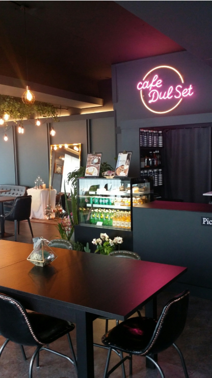

박민찬 - 권오길 손국수
주소: 인천광역시 서구 검단로 78
Operation hours: 11:00~21:00 (월요일 휴무)
권오길 손국수는 2대가 가업을 이어 장사를 하고 있는 인천의 한 국수 집이다. 매일 점심시간마다 사람들로 붐비는 이 곳은, 허영만 작가의 <식객> 19권에도 등장할 정도로 지역에서 인지도 높은 식당이다.
이 곳은 다른 국수집과는 확연히 다른 국수의 철학이 존재한다. 먼저, 면에 대한 정성이다. 이 가게는 한 건물 전체를 사용하고 있는데, 그 중에서도 식당은 1층뿐이고 2층부터는 제면공장이다.
권오길 손국수는 본래 5년 전까지만 해도 전통을 고수하며 분점을 내지 않았었는데, 가게가 전국적인 인기를 끌고 분점을 내달라는 단골손님들의 성원(?)에 못 이겨 청라, 김포, 일산 이렇게 세 곳에 분점을 냈다.
권오길 손국수의 메뉴는 크게 칼국수와 웰빙국수로 구분된다.
먼저, 칼국수를 살펴보자. 권오길 손국수의 칼국수는 손님 앞에서 조리하는 ‘즉석 칼국수’로 그 메뉴는 심플하게 ‘순한 맛’과 ‘매운 맛’으로 구분된다. 왼쪽 사진은 ‘매운 맛’이다.
미더덕과 새우, 버섯 그리고 감자가 어우러진 매콤하고 걸쭉한 국물의 맛은 그야말로 일품이다. 바로 이 메뉴가 필자의 강력 추천 메뉴이다. 매콤한 국물의 중독성은 이루 말할 수가 없다.
(사실, 필자는 인천에 갈 때마다 꼭 한 번씩 들러서 먹고온다.) 사실, 사람들의 발길이 많아지기 전까지는 매운 맛의 강도가 높아 매운 음식을 잘 못 먹는 사람들에게는 약간 부담이 될 수 있었지만,
최근에는 딱 적당한 정도로 매콤해져서 독자들 중 매운 맛을 못 먹는 사람들도 부담없이 즐길 수 있는 음식이다. 문득 따뜻한 칼국수를 먹고 싶다거나 술마신 다음날(?) 속을 풀고 싶다면, 이 메뉴를 먹어보기를 권장한다.
이제 웰빙국수를 살펴보자. 권오길 손국수의 웰빙국수는 ‘냉말이’, ‘냉소바’, ‘비빔국수’, ‘온말이’로 구분된다. 오른쪽 사진은 이들 중 가장 인기가 있는 ‘냉말이’이다. 권오길 손국수만의 특별한 공정으로 생산한 쫄깃한 면발과 정성들여 만든 냉육수의 조화는 그야말로 완벽하다. 무더운 여름철 얼음 동동 띄운 차가운 육수가 생각날 때, 에어컨이 빵빵한 권오길 손국수에서 냉말이 한 번 먹어본다면 한여름 무더위가 싹 날아갈 것이다. 칼럼을 작성하고 있는 현재 여름이 다 가고 이제 겨울이 다가오고 있지만 냉말이 국수의 감동을 느껴보고 싶어 지나가는 여름이 야속하기만 하다.(그래도 더운건 싫다.) 냉말이 국수는 기간 한정으로 판매하는 국수가 아니므로 언제나 자유롭게 먹어볼 수 있으니 뜨거운 국수에 질려 시원한 국수로 속을 적시고 싶은 사람들은 권오길 손국수를 방문해 즐겨보기를 바란다.
지금까지 권오길 손국수의 대표 메뉴들에 대해 살펴보았다. 물론 이외에도 보리밥, 물만두 등 국수와 겻들여 즐길 수 있는 음식들이 상당 수 있으므로 함께 즐겨보는 것도 괜찮다. (하지만 술은 판매하지 않으니 숙지하고 가길 바란다.)

번외로, 국수빌딩 2층에는 ‘카페 둘 셋’이라는 이름의 카페가 존재하는데, 내부가 상당히 감성적으로 꾸며져 있는 카페이다. 실제로 권오길 손국수를 이용한 영수증을 제시한다면 10% 할인을 해주는 제휴를 맺고 있으니 국수를 먹고 후식을 먹고 싶다면 들러보는 것도 좋을 것이다.